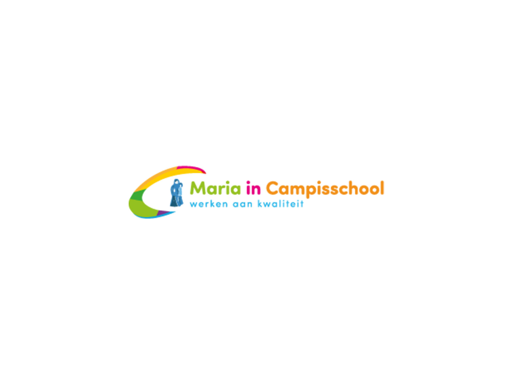
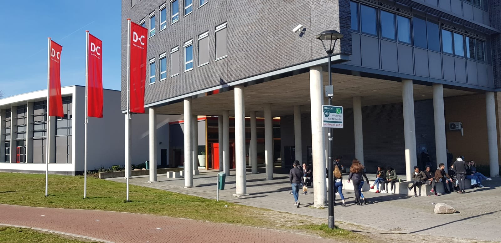
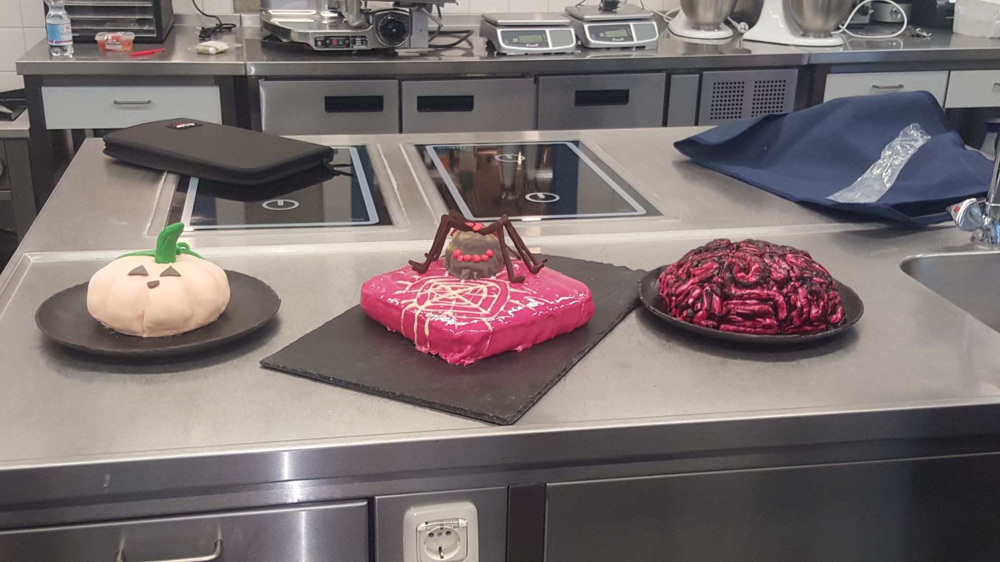

|
Ik heb 4 jaar op het Dr.Nassau College Penta gezeten,
En heb daar economie en ondernemen gevolgd op kader niveau. |

Ik heb op veel verschillende basisscholen gezeten,
Maar het MIC heb ik op gezeten voordat ik naar penta ging. |
|

En zoals wel duidelijk zit ik nu op het DC,
Waar ik meerdere opleiding heb geprobeerd. |

Op mijn vorige opleiding heb ik dit gemaakt tijdens halloween
|